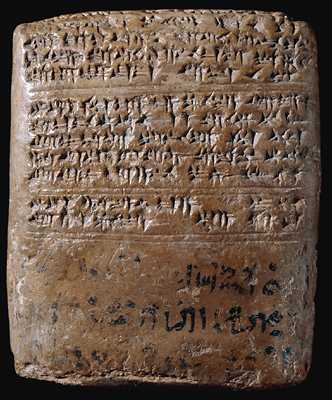

The Challenge -
Tablet with Hurrian language

This is one of the Amarna Letters. It is a letter from the Hurrian king Tushratta of Mitanni about the marriage of his daughter to the Egyptian king Amenhotep III. It was written at a time when cuneiform was used all over the Near East. The black ink writing on the lower half is ancient Egyptian so that the Egyptian scribe knew what the tablet was about so that he could file it in his archive.
To learn more about tablets like this visit the Writing Explore.
|
|